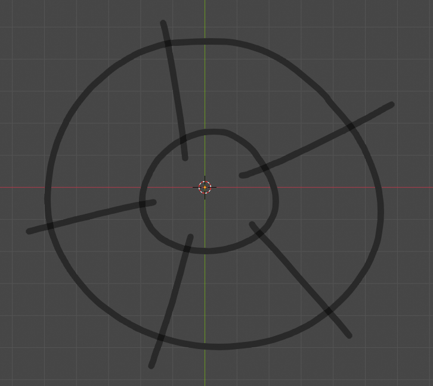

To install the G-Mesh Add-on in Blender:
- Open Blender
- Go to Edit > Preferences > Add-ons
- Click Install and select the G-Mesh ZIP folder you downloaded (Don't extract the ZIP).
- Enable the "GMesh" Add-on


The add-on is located at 3D Viewport > Sidebar > G-Mesh
The Grease Pencil object is mainly used for 2D animation and storyboarding, but since we are using it for retopology, it is recommended to stay in a single frame and layer.
To set up a Grease Pencil for G-Mesh, click on the active sculpt object and press [Setup GPencil]. This will add a Grease Pencil and set up all the parameters and options recommended for G-Mesh.
To draw, select the Grease Pencil object and change from “Object Mode” to “Draw Mode” in the top-left.
I will draw a square with four strokes:
The add-on adds a vertex each time the strokes cross each other, then, it connects them with edges and adds faces.
To use the add-on, go to the side panel in the viewport and click on the G-Mesh tab:
This is the add-on panel. Finally, I’ll press Full-Generation to generate the mesh.
G-Mesh analyzes the Grease Pencil without taking into account any modifiers, for example, mirrored strokes created by the Mirror Modifier won't intersect with the real strokes.
To put it simply, Grease Pencil modifiers are only for visualization.
I will create a closed circle mesh:
Since the ring strokes are disconnected, we would get an incomplete mesh.
Now I will draw the ring strokes again with Auto Merge enabled (the Setup GPencil operator enables it by default)
Auto Merge enabled This time, G-Mesh created a closing edge when it detected a closed stroke
I will make a square but in one continuous stroke:
There are no lines crossing each other, so no vertices are created.
Now, I will make a square with crossed lines in one continuous stroke:
This won’t generate anything because vertices are created only when two different strokes cross each other.
For this example, I will use this head sculpt.
I like to start with the edge flow first.
For the edge flow, I will create a new Grease Pencil material and make it yellow.
In this example, I use materials to better organize and visualize my work.
If your device slows down when using G-Mesh, you can adjust the stroke resolution
found in the top bar, Stroke > Simplify. The higher the value, the lower the stroke resolution.
(The Setup GPencil operator sets this value to 0.010 by default.)
For symmetric objects like this head, it is a good idea to have a line in the middle of the mesh so the mesh is connected in the middle, otherwise, there would be a gap.
To add this line, we can either fill the gap manually afterward or draw the contour of the sculpt and shrinkwrap it to its surface.
To draw the contour:
- Get into orthographic side view
- Disable the shrinkwrap modifier while drawing
- Set the stroke placement to Origin so the stroke doesn’t get placed on the side of the face when tracing
Make sure to get concave areas well so the shrinkwrap modifier works better.
Once the contour is drawn, duplicate the shrinkwrap modifier, set the offset to 0, and press ctrl + A to apply it.
Here's an example:
Now, with a black material, I will start filling the edge flow with edges to generate the mesh.
Here's a process overview:
When the mesh starts generating, sometimes you may accidentally create n-gons (non-square faces) when most retopology requires quads (square faces). To highlight these n-gons, we can use the Filter Faces by Sides geometry node that comes with the add-on’s asset library.
G-Mesh comes with an asset library that includes the Filter by Sides geometry node, which keeps or removes faces with a specified amount of sides.
To Add these to your asset browser, on the Add-On panel, press Add Asset Library:
You can see all the asset libraries in Edit > Preferences > File Paths, and scroll down to Asset Libraries.
Now, we can drag “Filter Faces by Sides” to our object through the asset browser and locate the n-gons:
If you have questions or comments about G-Mesh or the documentation you can contact me through the Blender Market product page.
Created: 10/2/2023
Last Updated: 10/21/2023